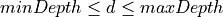

RegionCheck¶
evrc plugin for scevent
Description¶
evrc (event region check) is a plugin for scevent setting the event type by comparing the location of the preferred origin with defined regions.
Note
Events for which the mode of the preferred origin is “manual” are by default not considered.
Definition of regions¶
The regions are defined by closed polygons provided as
BNA files. Configure rc.regions to consider
a region defined by its name given in the header of the BNA polygon.
There exist positive and negative regions:
Positive region: All events within the area enclosed by the polygon are flagged positive, all events not enclosed by the polygon are flagged negative.
Negative region: All events within the area enclosed by the polygon are flagged negative, all events not enclosed by the polygon are flagged positive.
Regions are negative if the name of the enclosing polygon
starts with ! (exclamation mark. Otherwise the region is positive.
If a list of region names is defined, the last matching region in the list takes priority when treating events.
Treatment of events¶
When the evrc plugin is loaded and configured, the location of the preferred origin of an events is compared with the defined regions. Events within a positive and a negative region are flagged positive and negative, respectively. By default it sets the event type to “outside of network interest” if the event is flagged negative.
When activating
rc.readEventTypeFromBNAthe type of positive events is set according to the eventType defined in BNA headers. The type of negative events is set according torc.eventTypeNegative. Prepend ‘accept’ to the list of polygons to unset the type of negative events.When
rc.readEventTypeFromBNAis inactive, the event type is set based onrc.eventTypePositiveandrc.eventTypeNegative:by default the type of all negative events (events within negative regions) is set to “outside of network interest”. Prepend accept to
rc.regionsto unset the event type for negative events.positive: The event type of positive events is set to
rc.eventTypePositive. For emptyrc.eventTypePositivethe type is unset.negative: The event type of negative events is set to
rc.eventTypeNegative. The default type for negative events is “outside of network interest”.
Evaluation is made based on the order of the regions names defined in rc.regions.
The last matching criteria applies.
In this way disjunct and overlapping regions with different behavior can be defined.
If events ARE NOT within positive regions their type is set to “outside of network interest”.
Disjunct and overlapping regions in front of a default.¶
Event types¶
The event types are either set based the types configured in
rc.eventTypePositive and rc.eventTypeNegative
or based on the type provided by the header of BNA polygons if
rc.readEventTypeFromBNA is active.
Type definition¶
For defining the event type, any value defined in SeisComP UML diagram [22]. The list of valid values can also be found in the Event tab of scolv: Type.
Examples for valid event types:
earthquake
quarry blast
nuclear explosion
not existing
…
Invalid values result in errors which are reported depending on the verbosity level of scevent.
Event type from BNA¶
If rc.readEventTypeFromBNA is active, the event type is read from the
header of the feature. Use a key-value pair in double quotes to specify the type
where the key is “eventType” and the value is the event type. Key and value are
separated by “:”.
Example BNA file:
"coal","rank 1","eventType: mining explosion",6
13.392,50.3002
13.2244,50.4106
13.4744,50.5347
13.6886,50.4945
13.6089,50.358
13.6089,50.358
where the name of the polygon / region is “coal” and the considered event type is “mining explosion”. The name and the rank are mandatory fields.
The depth of the event can be tested, too. For events within a region but with depth outside a depth range the type is not set. The limits of the depth range can be added to the header of the BNA files using the key words minDepth and maxDepth. The depth d of an event must be within the range

The depth is only tested if minDepth or maxDepth or both are set and if
rc.readEventTypeFromBNA is active.
Example BNA file:
"coal","rank 1","eventType: mining explosion, minDepth: -5, maxDepth: 10",6
13.392,50.3002
...
Warning
The names of polygons, e.g. coal, are case sensitive and must not contain commas.
A hierarchy applies to the reading of BNA files. Read the section Vector layers for the details.
Setting up the Plugin¶
Load the evrc plugin: Add to the global configuration or to the global configuration of scevent in the order of priority:
plugins = ${plugins},evrc
Add BNA polygons by defining rc.regions.
Use the region name to define positive and negative regions. Names with
leading ! define negative regions.
rc.regions = accept,area
Note
scevent stops
if the evrc plugin is loaded but rc.regions is not defined.
Activate rc.readEventTypeFromBNA and add the eventType key-value pair
to the header of the BNA polygon if the event type shall
be read from the BNA polygon.
Examples:
Set type of events within the positive polygon germany but do not change the type outside:
rc.regions = accept,germany
Accept all events without setting the type but set the type for all events within the positive polygon germany but consider negative within the polygon quarries:
rc.regions = accept,germany,!quarries
Accept all events without setting the type but consider events within the negative polygon germany and events within the positive polygon saxony:
rc.regions = accept,!germany,saxony
Module Configuration¶
Note
rc.* Test if events lie within or outside a region. Events within a region are flagged as positive, outside as negative. The event type is set accordingly. Add the plugin “evrc” to the plugins parameter in the order of priority to make this feature available. Read the documentation of the RegionCheck for more details.
- rc.setEventType¶
Default:
trueType: boolean
Allow setting the event type. The type of events which have manual origins will not be changed unless configured explicitely by "overwriteManual".
- rc.overwriteEventType¶
Default:
trueType: boolean
Allow overwriting existing event types. Disabling does not allow accounting for changes in source region.
- rc.overwriteManual¶
Default:
falseType: boolean
Allow setting the event type if the mode of the preferred origin is manual or if the event type was set manually.
- rc.regions¶
Default:
!rejectType: list:string
The list of closed BNA polygon names defining regions for flagging event as positive or negative. A polygon name defines a positive region but names with prefix ! (exclamation mark) define negative regions. Evaluation is done in the order of the polygons. The last matching criteria applies and the event type is set accordingly.
Default: If events are not positive or are negative regions the event type is set to "outside of network interest". Default: "!reject", use "accecpt" to overwrite the default.
Examples:
Events are flagged positive within the polygon "germany":
germany
All events are flagged positive but events within the polygon "quarries" are negative:
accept,!quarries
Events within the polygon "germany" are flagged positive but all other events and events within the polygon "quarries" are negaitve:
germany,!quarries
All events are flagged positive but events within the polygon "germany" are negative and all events within the polygon "saxony" are positive:
accept,!germany,saxony
- rc.readEventTypeFromBNA¶
Default:
falseType: boolean
Read the event type, minDepth and maxDepth from the BNA polygon header. The header may contain the values, e.g. header of a polygon with name "quarry":
"quarry","rank 1","eventType: quarry blast, minDepth: -5, maxDepth: 10",13
When eventType is set, it supersedes eventTypePositive and eventTypeNegative. When not set, eventTypePositive and eventTypeNegative are considered.
- rc.eventTypePositive¶
Type: string
New type of an event which is flagged positive. Ignored if readEventTypeFromBNA is active.
Empty: Do not set type
- rc.eventTypeNegative¶
Default:
"outside of network interest"Type: string
New type of an event which is flagged negative. Ignored if readEventTypeFromBNA is active.
Empty means default: "outside of network interest"


{kind=link}